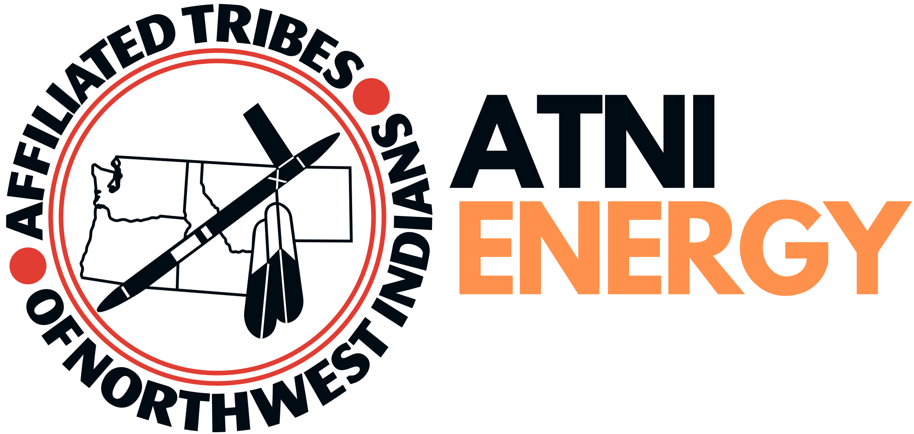

About the Task Forces
The Energy Task Forces bring member Tribes of the Affiliated Tribes of Northwest Indians (ATNI) together on the energy, data center, and artificial intelligence (AI) decisions that reach Tribal homelands. This page explains who is behind the work, how the site handles data, and how it was built.


- 1953ATNI formed. Verified against ATNI’s own history (at-001).
- 1995Energy Program established. Verified against ATNI’s Energy Committee page (at-002).
- T0 and T1Tiers held; only T0 here
- NoneOutside services
ATNI and the Task Forces
ATNI is a regional organization of American Indian and Alaska Native Tribal governments in Washington, Idaho, Oregon, Montana, Nevada, Northern California, and Alaska. Tribal leaders in the Northwest formed ATNI in 1953, dedicated to Tribal sovereignty and self-determination. Member Tribes set ATNI policy through resolutions adopted at its conventions.
ATNI established its Energy Program in 1995 to represent Tribal rights and interests in power and transmission issues at the Bonneville Power Administration, and that work has since grown into regional and national policy on Tribal energy, Tribal electric utilities, and transmission (ATNI Energy Committee).


The Energy Task Forces continue that work alongside ATNI’s Climate program. The Tiered Sovereign Data Framework, which this site follows, was developed within ATNI at the intersection of climate adaptation, data science, and Tribal self-determination.
In development
Energy Committee leadership and task force members will be listed here once confirmed, with each person’s agreement.
Photographs from member Tribes’ own energy projects will appear here, only with each Nation’s consent.
Data Governance
This project classifies its material under the Tiered Sovereign Data Framework (TSDF), which ATNI endorsed as a recognized standard for Indigenous Data Sovereignty in Resolution #2026-034 (PDF). It holds two tiers only:
- T0 Open/Public: ATNI resolutions, links to public websites, published reports and datasets, and syntheses released for public use. Only T0 material appears on this site.
- T1 Community Network: Planning documents, meeting planning, working drafts, and notes awaiting release decisions. T1 material stays within the network and is never published here.
The project holds no T2 (Negotiated Partner) or T3 (Sovereign Restricted) data and plans none. If material that might be T2 or T3 reaches the project, it is not added; the ATNI staff who maintain the project are consulted, and the material is handled outside it.
- T1 material becomes public only by an explicit release decision.
- When a tier is uncertain, the material stays T1 until that decision is made.
- Writing derived from T1 material stays T1 until it is released.
- T1 material is not used to train AI models.
- Before release, an automated check scans the public site for local file paths, credentials, links to private documents, and library entries that are not T0.
How the Library Is Curated
Every library entry is public (T0) material: an ATNI resolution or a public report, policy, law, dataset, tool, or website. Each entry records its publisher, date, type, the task force areas it serves, whether it is specific to Tribal Nations, and a short summary.
Summaries describe what a source says. They are not ATNI positions unless the source is an ATNI resolution. Links point to the publisher’s own copy where one exists; ATNI resolutions are hosted on this site as adopted. ATNI staff direct the selection of entries and review each summary against its source.
The library data is open as library.json. To suggest a public resource, contact ATNI.
How This Site Was Built
ATNI staff decide what is published and check library summaries against their sources.
The site is static HTML, CSS, and JavaScript with no outside services. It loads no analytics, trackers, outside scripts, or outside fonts, and it sets no cookies. If a reader chooses the light or dark theme, the browser remembers that choice on that device only. Pages read without JavaScript; the library’s search and filters, the energy plan and funding views, and the policy watch lists need it, and each links to its open data file instead.
License
The prose and datasets on this site are licensed under Creative Commons Attribution-NonCommercial-ShareAlike 4.0 International (CC BY-NC-SA 4.0). Other material on the site keeps its own terms:
- ATNI resolutions: ATNI’s terms.
- Upstream sources and quoted text: each source’s own terms. The Tiered Sovereign Data Framework, for example, is released under its own CC BY-NC-SA 4.0 license.
- Fonts: the SIL Open Font License 1.1, as listed under Credits.
- Site code: a license has not yet been set.
Credits
-
Design: The ATNI Climate Design System.
- Typefaces: League Spartan, by The League Spartan Project Authors, and Noto Sans, by The Noto Project Authors, both under the SIL Open Font License 1.1 (League Spartan license, Noto Sans license).